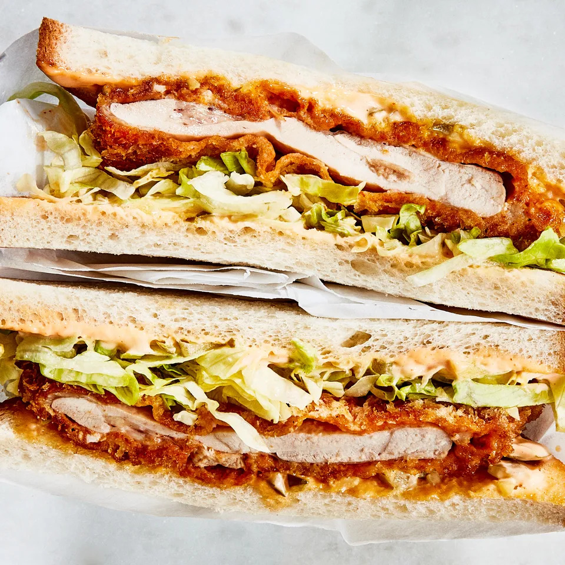

Spicy Chicken Katsu Sandwiches

Description
These sandwiches combine the shattering panko crispiness of katsu-style cutlets and the fiery heat found in Nashville-style hot chicken with some cooling shredded lettuce to put out the fire.
Ingredients
- ½ cup mayonnaise
- ¼ cup chopped bread-and-butter pickles
- 2 Tbsp. plus ¼ cup hot sauce, such as Crystal
- 1 tsp. kosher salt, plus more
- ½ cup all-purpose flour
- 3 Tbsp. cayenne pepper
- 2 tsp. garlic powder
- 1 large egg
- 2 cups panko (Japanese breadcrumbs)
- 4 skinless, boneless chicken thighs, lightly pounded to ½" thick
- ¼ cup (or more) extra-virgin olive oil
- 8 slices milk bread
- Shredded iceberg lettuce (for serving)
Steps
- Combine mayonnaise, pickles, and 2 Tbsp. hot sauce in a small bowl. Season with salt; set aside.
- Combine flour, cayenne, garlic powder, and remaining 1 tsp. salt in a medium bowl. Whisk egg and remaining ¼ cup hot sauce in another medium bowl. Place panko on a large plate. Working one at a time, dip chicken into flour dredge, turning to coat. Shake off any excess. Dip into egg mixture until coated, shaking off excess. Dredge in panko, turning to coat. Transfer to a large plate or a small rimmed baking sheet.
- Heat oil in a large skillet over medium-high until shimmering. Working in 2 batches, cook chicken, reducing heat to medium if it's browning too quickly, until golden and very crisp on both sides, about 3 minutes per side. Transfer to a wire rack.
- Spread reserved spicy mayo on one side of each slice of bread. Top with chicken and shredded lettuce, then close up sandwiches.